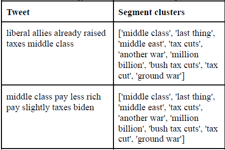
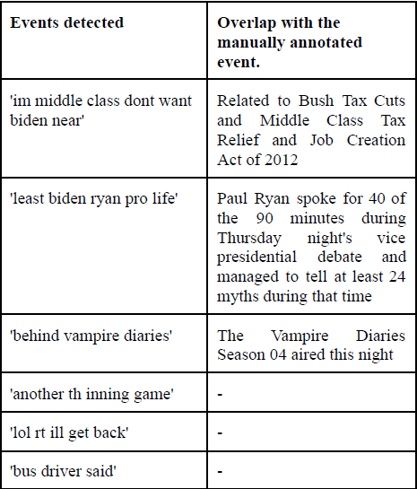

Project
Event detection using social media (Twitter) text


Text segmentation, bursty segment extraction, and clustering to summarize events from Twitter streams. The model achieved ~50% precision on the evaluated dataset.
Technologies: Python, LexRank, Matplotlib.